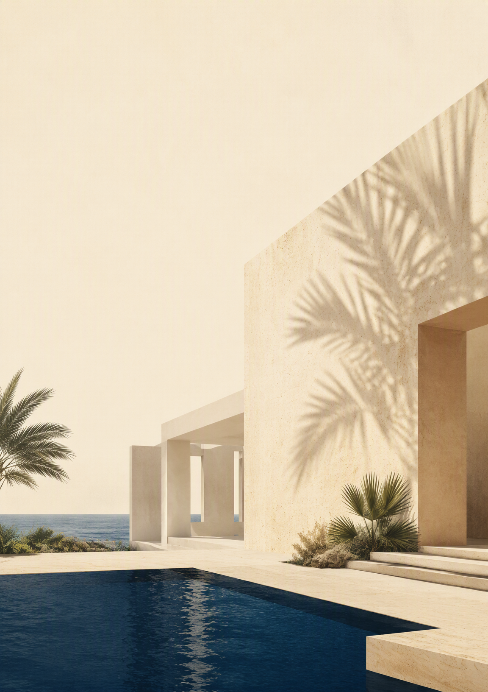
Andris Peña · portafolio inmobiliario
Segmentación página a página de la web: capturas reales, bocetos de estructura y el criterio con el que se organiza la información en cada sección. Tres proyectos en Punta Cana, un recorrido pensado para convertir visitas en conversaciones.
| Andris Peña · Asesor inmobiliario | Septiembre 2026 · Versión 1.0 |
sección por sección.
Las capturas de este documento se tomaron el 18 de septiembre de 2026 sobre el entorno de desarrollo del sitio, a 1440 px de ancho (escritorio) y 390 px (móvil). Los bocetos wireframe son ilustraciones de la estructura de cada página, dibujados con los tokens visuales oficiales de la marca. Este documento describe la arquitectura de la información; no constituye una oferta comercial.
y arquitectura de la información.
El sitio es el portafolio independiente de Andris Peña, asesor inmobiliario en Punta Cana. Su north star creativo es «la persona y el lugar»: el retrato real y la fotografía de los proyectos conducen un recorrido claro y contemporáneo que presenta tres proyectos —Melcon Paradise, Terra Serena y The Beach at Punta Cana City Place— y convierte la visita en una conversación verificable, sin prometer envíos ni estados que el sistema no garantiza.
La información se organiza en siete rutas con responsabilidades bien definidas: una portada que orienta, un catálogo que compara, una ficha que documenta, un mapa que ubica, una página de asesor que genera confianza, una calculadora que pone números editables y un contacto que prepara la consulta. Todo el recorrido comparte el mismo identificador de proyecto, de modo que la selección del visitante se conserva entre ficha, mapa, favoritos y consulta.
| Ruta | Nombre | Función en el recorrido |
|---|---|---|
| / | Inicio | Portada con retrato y propuesta de valor; explorador de proyectos; mapa compacto; presentación breve y accesos a herramientas. |
| /proyectos | Catálogo | Comparar los tres proyectos: buscador, presupuesto, filtros por zona, guardados y comparación. |
| /proyectos/[slug] | Ficha | Dossier propio por proyecto: galería, hechos confirmados, amenidades, ubicación y contacto con el proyecto preseleccionado. |
| /mapa | Mapa | MapExplorer con los tres puntos verificados, panel sincronizado y vista 3D inicial; exploración limitada a Punta Cana. |
| /sobre-mi | Sobre mí | Escena editorial del asesor, proceso de acompañamiento en cuatro pasos y preguntas frecuentes. |
| /calculadora | Tu inversión | Simulador editable de pagos (firma, construcción, entrega) con escenario descargable. Cifras ilustrativas. |
| /contacto | Conversemos | Formulario validado que prepara un resumen local revisable antes de elegir WhatsApp o correo. |
Toda la interfaz se construye sobre un único sistema de tokens: navy estructural para identidad, paneles y acciones; arena cálida para selección y acentos; superficies marfil que dan espacio a la fotografía. La tipografía combina una sans moderna para recorrer y operar con una serif editorial para la presencia personal.
| Ink · navy principal | #0B1F3A — identidad, paneles, acciones | |
| Ink suave | #132E4A — superficie navy secundaria | |
| Azul acento | #316692 — foco, estados, marcador seleccionado | |
| Arena | #D8C8B4 — selección y acciones sobre navy | |
| Superficie cálida | #F4F0E6 — base cálida y alternancia | |
| Marfil elevado | #FBF9F4 — lienzo principal | |
| Texto secundario | #4E5A6B — apoyo y metadatos |
| Decisión | Criterio |
|---|---|
| Tipografía sans | Plus Jakarta Sans (SIL OFL) para texto, datos y controles; cuerpo base 15 px con interlineado 1.7. |
| Tipografía serif | Cormorant Garamond 500 para el nombre, la firma y los cierres en cursiva de los títulos editoriales. |
| Layout | Contenedor de 1440 px, márgenes fluidos (20–80 px), separación de sección de 72–120 px; catálogo de 1–3 columnas. |
| Componente firma | PropertyCard: fotografía amplia con información sobre vidrio navy, flechas manuales, contador, gesto horizontal y favorito. |
| Botones y foco | Botones de mínimo 52 px; foco visible azul de 3 px; contraste WCAG AA como objetivo en ambos temas. |
| Movimiento | Entradas con máscaras, parallax limitado y tarjetas que siguen al puntero (máx. 2.2°); prefers-reduced-motion deja todo estático. |
| Multi-tema e idiomas | Tema claro, oscuro y sistema; contenido en español, inglés y francés; PWA instalable con recuperación offline. |
la primera impresión, en capas.
Ruta: /La portada presenta a la persona y el lugar en cinco bloques: navegación global, escena de marca con el nombre monumental, explorador de proyectos, mapa compacto y un cierre que deriva a las herramientas.
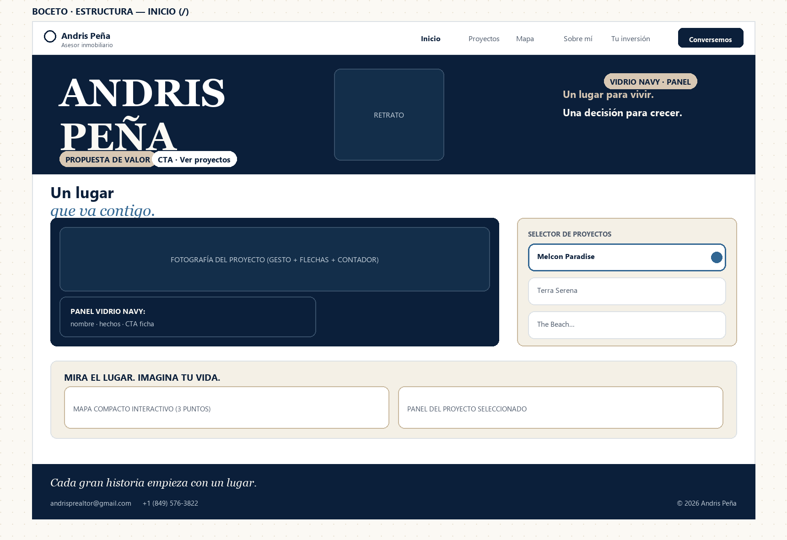
| Objetivo | Orientar en menos de un scroll: quién es Andris, qué proyectos existen y dónde están. |
| Acciones | Ver proyectos · abrir mapa · guardar favorito · contactar. |
| Móvil | El hero se recompone como póster vertical; el selector pasa a lista horizontal desplazable. |
Monograma y nombre a la izquierda; rutas con estado actual, idioma ES/EN/FR, tema y ajustes a la derecha, cerradas con el CTA «Conversemos» en navy.
Nombre monumental en dos planos —ANDRIS detrás, PEÑA delante— con el retrato real de traje centrado sobre un fondo arquitectónico con parallax. A la izquierda, la propuesta de valor («Un lugar para vivir. Una decisión para crecer.») con CTA; a la derecha, un panel de vidrio navy con datos de contacto directos.
Título editorial («Un lugar que va contigo.»), una tarjeta grande con fotografía, panel de vidrio navy —nombre, ubicación, hechos confirmados, CTA a la ficha y acción de mapa— y un selector lateral con los tres proyectos; flechas manuales, contador, gesto horizontal y favorito.
Mapa interactivo («Mira el lugar. Imagina tu vida.») con los tres puntos verificados y el panel del proyecto seleccionado, arrastrable desde la carga.
Resumen del asesor con retrato y accesos a herramientas; el footer navy repite la frase de marca y los contactos confirmados.
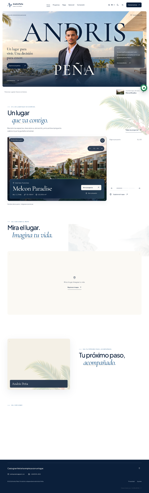
comparar sin perder el hilo.
Ruta: /proyectosEl catálogo resume el recorrido en una sola vista: un titular editorial, una barra de filtros completa y las tres tarjetas comparables, con transparencia comercial al pie.
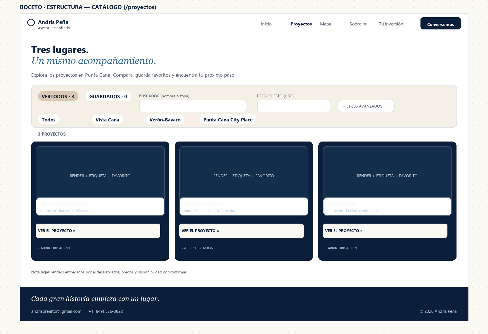
| Objetivo | Permitir comparar los tres proyectos en una sola vista y entrar al dossier. |
| Acciones | Filtrar · buscar · comparar · guardar favoritos · abrir ficha o mapa. |
| Responsive | Una, dos o tres columnas según ancho (umbrales 40 y 68 rem). |
«Tres lugares. Un mismo acompañamiento.» con una línea de apoyo que anuncia qué se puede hacer aquí: explorar, comparar, guardar.
Chips de estado («Ver todos · 3», «Guardados»), buscador por nombre o zona, selector de presupuesto en USD, filtros avanzados y chips de zona (Vista Cana, Verón-Bávaro, Punta Cana City Place). Un filtro sin resultados permanece operable y explica su estado.
Cada tarjeta apila fotografía con etiqueta «Render del proyecto», acciones de comparar y favorito, contador con flechas y gesto horizontal; bajo el vidrio navy: ubicación, nombre, hechos confirmados (habitaciones y m²), CTA «Ver el proyecto» y enlace de ubicación.
Aviso visible: renders entregados por el desarrollador; precios, disponibilidad y fechas se confirman antes de cualquier reserva.
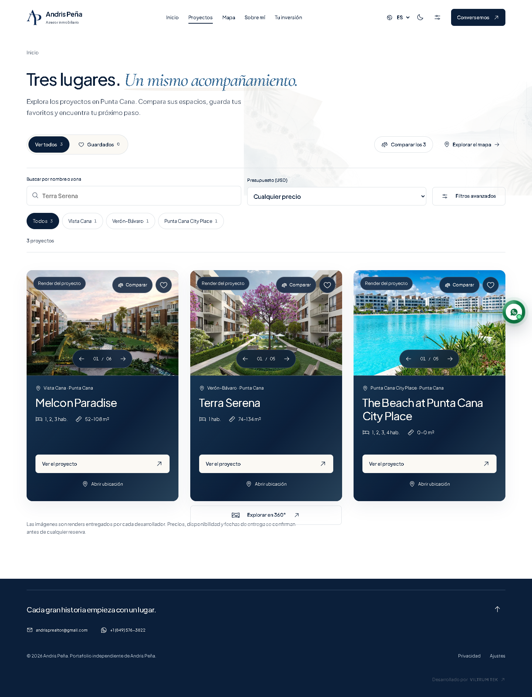
el dossier, dato a dato.
Ruta: /proyectos/[slug]La ficha es el dossier de cada proyecto: galería, hechos clave, detalles y ubicación embebida, siempre con enlaces que conservan la selección.
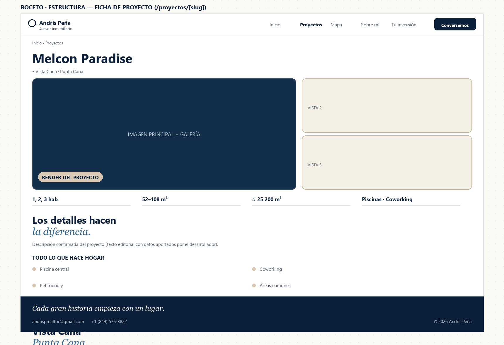
| Objetivo | Documentar con hechos confirmados y derivar a mapa o contacto conservando el proyecto. |
| Contenido | Solo Melcon Paradise tiene ficha escrita completa; Terra Serena y The Beach muestran nombre, ubicación y renders verificados, con datos comerciales pendientes. |
Migas de navegación («Inicio / Proyectos»), nombre del proyecto en titular grande, zona con coordenadas verificadas y acciones de compartir y favorito.
Imagen principal con dos vistas secundarias y botón «Abrir galería»: colección del proyecto con miniaturas, controles, teclado y gesto táctil; dimensiones reservadas y recuperación de error contextual.
Tres o cuatro cifras confirmadas en línea —tipologías, metrajes, terreno— antes de cualquier texto largo.
«Los detalles hacen la diferencia.» abre la descripción aportada por el desarrollador y una lista de amenidades en dos columnas (piscina central, coworking, pet friendly, áreas comunes…), con CTA de disponibilidad.
Encabezado de zona, lista de los tres proyectos junto al mapa con el marcador activo, enlace externo «Ver en Google Maps» y atribución OpenStreetMap.
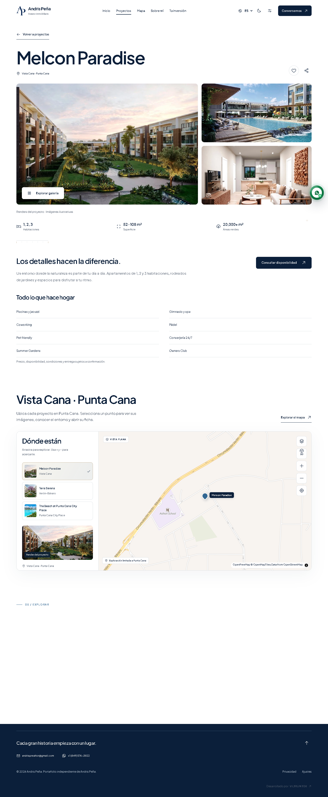
el lugar, en contexto.
Ruta: /mapaEl mapa responde a una sola pregunta: ¿dónde están? Un panel lateral sincronizado con el lienzo, y una exploración acotada al contexto de Punta Cana.
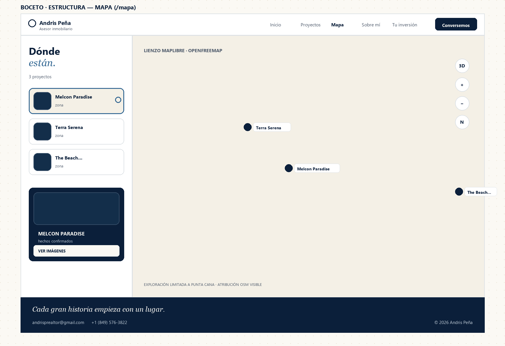
| Objetivo | Ubicar los proyectos entre sí y conectar el lugar con la ficha y la consulta. |
| Sincronía | Panel y marcadores comparten selección; /mapa?proyecto=slug abre el punto desde cualquier ruta. |
| Móvil | Mapa arriba y panel debajo; la rueda sigue desplazando la página en los mapas compactos. |
Lista de los tres proyectos con miniatura, nombre y zona; la selección se marca con check azul. Debajo, la tarjeta del proyecto activo: fotografía, hechos confirmados y botones «Ver imágenes» y «Ver el proyecto», más enlace a Google Maps.
MapLibre con OpenFreeMap y datos de OpenStreetMap: tres marcadores verificados, edificios extruidos y perspectiva 3D activada al inicio. Controles de zoom, brújula, vista plana y cambio 3D/plano.
La cámara se limita al área de Punta Cana que engloba los tres proyectos; aviso visible de «Exploración limitada a Punta Cana» y atribución OSM siempre presente.
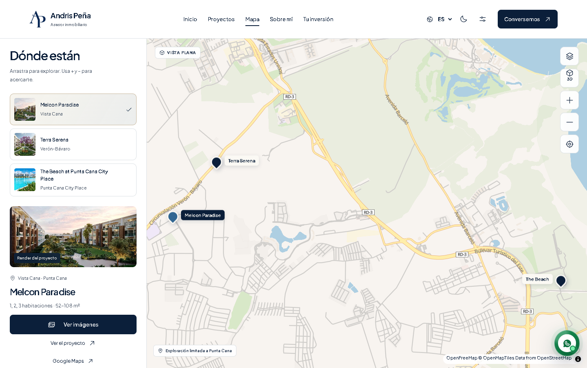
la confianza, paso a paso.
Ruta: /sobre-miLa página del asesor construye confianza con método visible: una escena editorial del retrato, un proceso en cuatro pasos y preguntas directas.
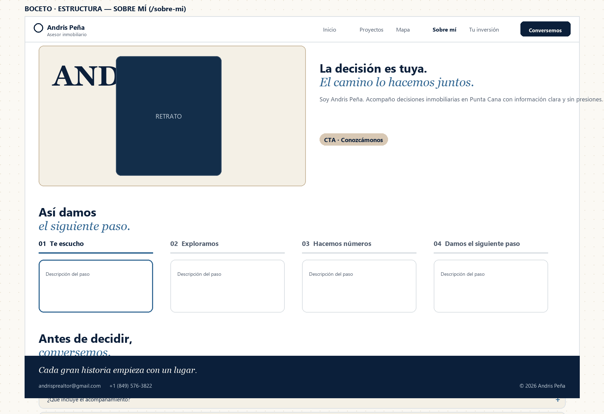
| Objetivo | Generar confianza mostrando método: escuchar, explorar, numerar y acompañar. |
| Contenido | Biografía breve confirmada; cursos, certificaciones y testimonios siguen pendientes y no se inventan. |
El retrato real de camisa blanca recortado sobre un fondo editorial con el nombre en vertical; a la derecha, «La decisión es tuya. El camino lo hacemos juntos.», la presentación de Andris y el CTA al proceso. La foto rebasa el marco con sombra suave y luz ambiental.
«Así damos el siguiente paso.» con numeración funcional 01–04: Te escucho, Exploramos, Hacemos números, Damos el siguiente paso. Sin etiquetas ornamentales: cada paso explica su contenido.
«Antes de decidir, conversemos.» usa details/summary nativo: accesible por teclado y sin JavaScript para abrir y cerrar.
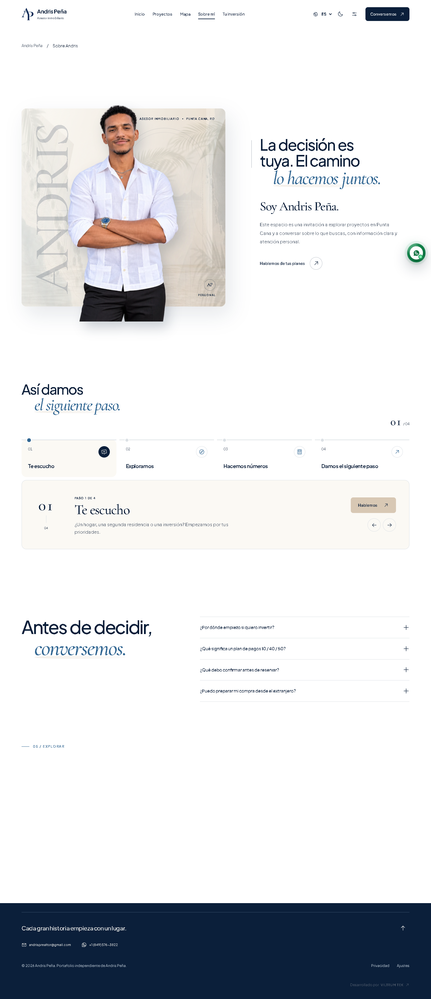
números editables, cero promesas.
Ruta: /calculadoraLa calculadora convierte la incertidumbre en un escenario propio: entradas simples a la izquierda, resultado navy a la derecha y un aviso legal permanente.
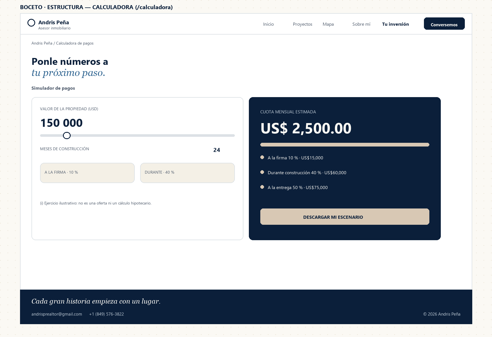
| Objetivo | Que el visitante juegue con su propio escenario y entienda el plan de pagos sin presión comercial. |
| Cálculo | Lógica pura e independiente de React; céntimos exactos con redondeo distribuido en la última cuota. |
Titular sans con cierre en serif cursiva y una línea de apoyo; migas de navegación arriba.
Valor de la propiedad en USD, meses de construcción con deslizador (1–120), porcentajes a la firma y durante construcción; botón «Restablecer». Todos los campos son editables.
Cuota mensual estimada en cifras tabulares, barra de progreso del plan, desglose por fases (a la firma 10 % · durante construcción 40 % · a la entrega 50 %), última cuota ajustada por redondeo y botón arena «Descargar mi escenario».
Nota permanente: ejercicio ilustrativo, no un cálculo hipotecario; reserva, gastos, impuestos y financiación excluidos; el plan 10/40/50 requiere confirmar vigencia.
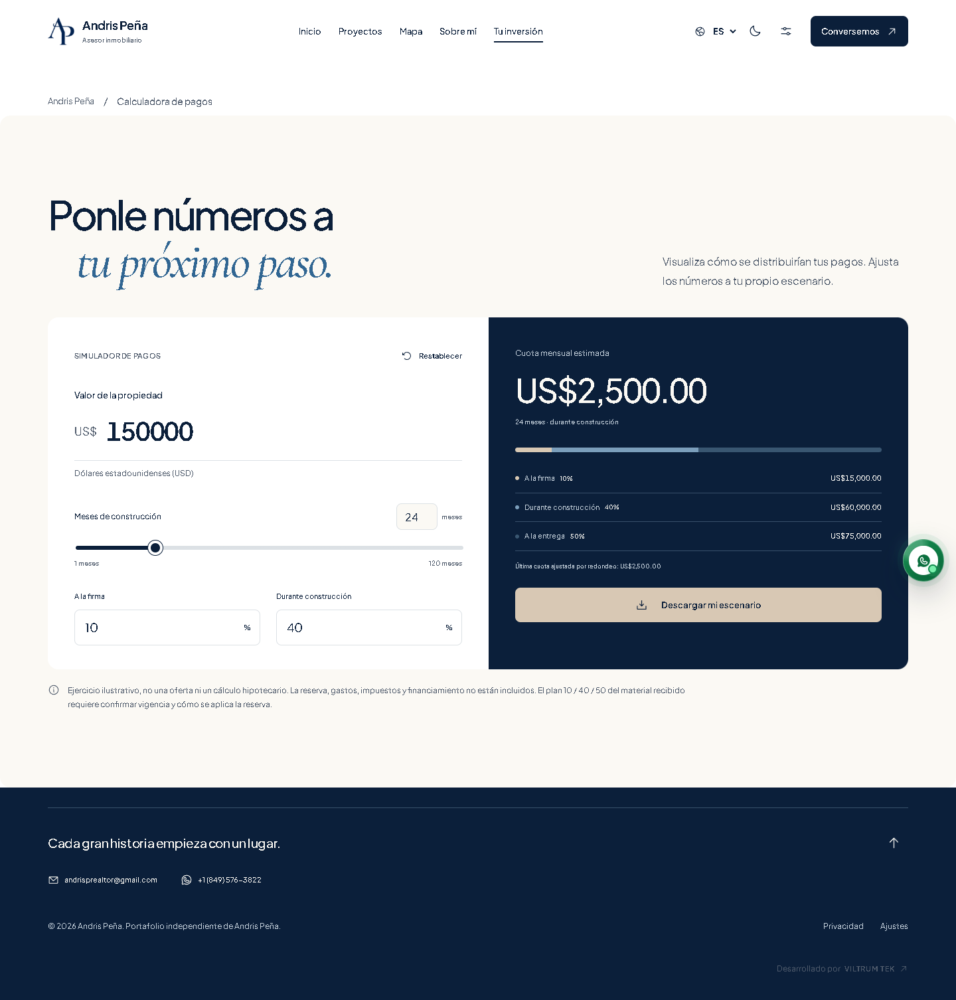
de la visita a la conversación.
Ruta: /contactoEl contacto baja la barrera de la conversación: datos directos a la vista y un formulario que prepara el mensaje sin enviar nada por el visitante.
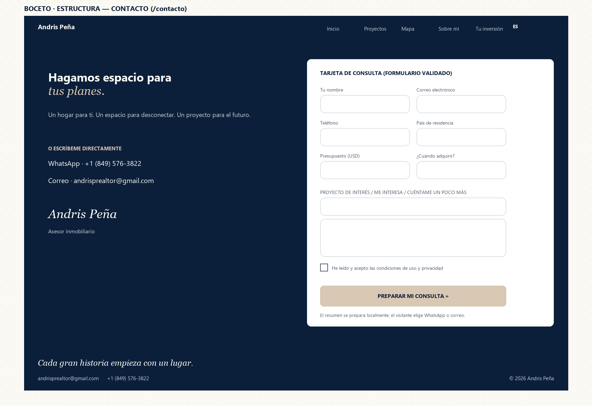
| Objetivo | Bajar la barrera de contacto y dejar la conversación en el canal que el visitante prefiera. |
| Integración | ?proyecto=slug conserva la selección al llegar desde ficha, mapa o catálogo. |
Sobre el panel navy: «Hagamos espacio para tus planes.», el WhatsApp +1 (849) 576-3822 y el correo andrisprealtor@gmail.com, y la firma «Andris Peña · Asesor inmobiliario». El retrato de traje convive en una zona independiente del texto.
Nombre, correo, teléfono con código de país, país de residencia, presupuesto en USD, horizonte de compra, proyecto de interés (preseleccionado si se llega desde una ficha), motivo y mensaje abierto. Etiquetas persistentes, campos de mínimo 48 px y errores asociados.
Casilla de aceptación de condiciones de uso y privacidad antes de preparar la consulta; el CTA arena «Preparar mi consulta» resume localmente el mensaje.
Preparar el resumen no envía nada: el visitante lo revisa y elige WhatsApp o correo. No se simula un estado de «mensaje enviado».
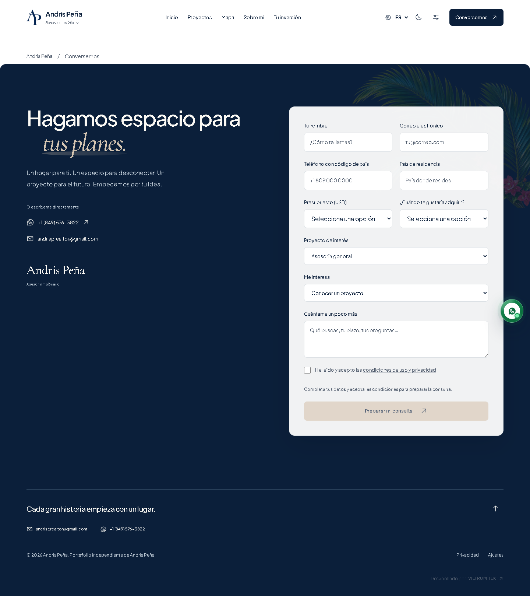
el mismo sitio, en cualquier pantalla.
El diseño es mobile-first con puntos de ajuste verificados a 320, 375, 768 y 1440 px. A 760 px el selector de proyectos se vuelve horizontal, el mapa pasa arriba con su panel debajo y los márgenes se reducen; la navegación de escritorio se repliega en menú a 1120 px y en móvil convive una barra inferior con cuatro accesos. El tema oscuro adapta superficies mediante tokens semánticos —el vidrio navy y el texto marfil se mantienen estables— y todo el contenido está disponible en español, inglés y francés.
|
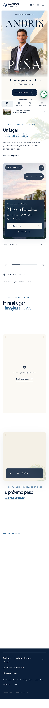 Figura 15 · Inicio a 390 px: el hero se recompone como póster vertical.
|
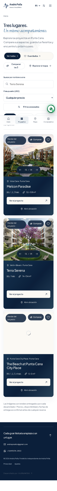 Figura 16 · Catálogo a 390 px: tarjetas a una columna con la misma jerarquía.
|
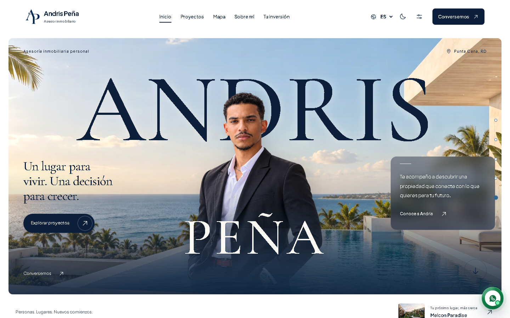 Figura 17 · Portada en tema oscuro: superficies adaptadas, vidrio navy estable.
|
lo que se muestra y lo que falta por confirmar.
El sitio presenta a Andris Peña como asesor independiente y convierte la visita en conversaciones verificables: cada cifra visible tiene fuente confirmada y cada promesa está limitada a lo que el sistema realmente hace.
| Proyecto | Estado de contenido |
|---|---|
| Melcon Paradise | Ficha documentada: unidades, amenidades, precios de referencia y entrega estimada; requiere confirmar vigencia comercial antes de publicitar. |
| Terra Serena | Nombre, ubicación y renders verificados; descripción comercial aportada el 14 de septiembre de 2026; datos pendientes de confirmación antes de reserva. |
| The Beach at Punta Cana City Place | Nombre, ubicación y renders verificados; tabla de precios pendiente y disponibilidad sujeta a fase y tipología. |
WhatsApp +1 (849) 576-3822 · Correo andrisprealtor@gmail.com. Confirmados por el cliente el 12 de septiembre de 2026; son la única fuente de contacto del sitio.
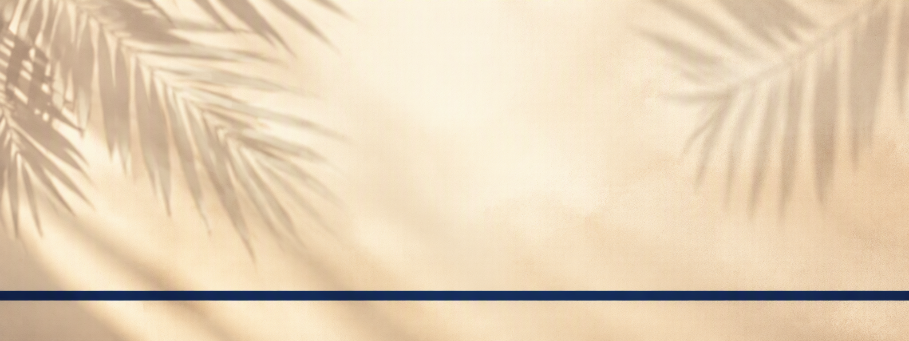
Cada gran historia empieza con un lugar.
Andris Peña · Asesor inmobiliario · Punta Cana · Septiembre 2026